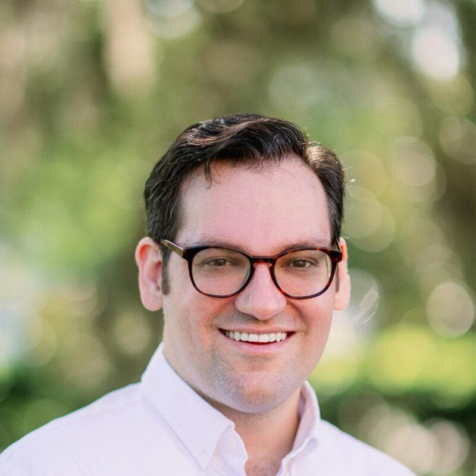
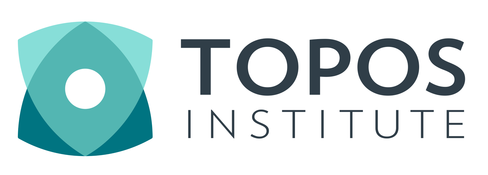
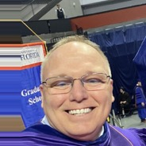
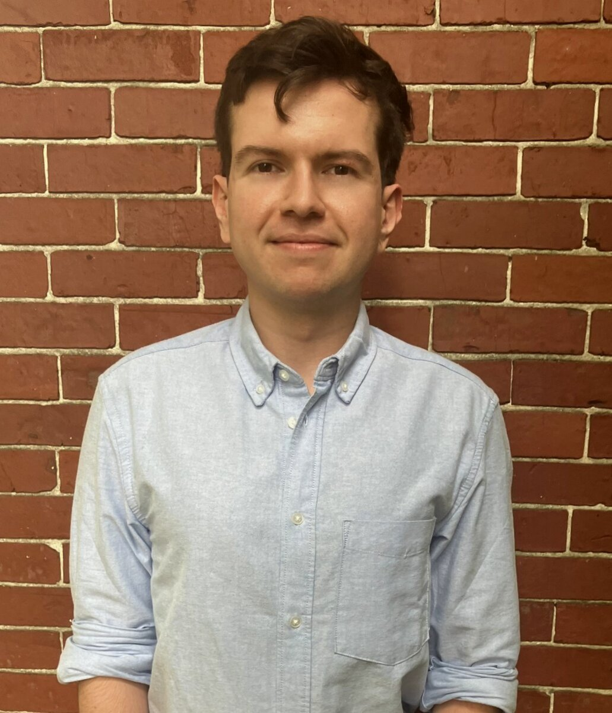

James FairbanksDIGICAMS for CODAC
Vision and Plan for the Year
Open the deck →
Hans Riess

Compositional Optimization for DIGICAMS
Open the deck →
Kristopher Brown

Toward Compositional Agent-Based Modeling
Open the deck →

Warren DixonFrom Local to Global
Safety-critical control on nonlinear and topologically complex spaces
Open the deck →

Keith CurrierFrom Local to Global
Sheaf-Theoretic Control Barrier Functions on Manifolds
Open the deck →
James Fairbanks

Sheaves for Coordination Problems in Distributed Autonomous Systems
Open the deck →